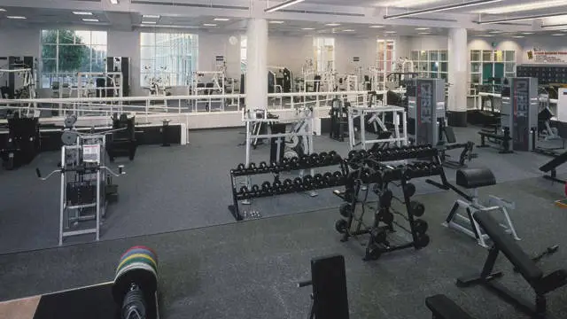

Web Scraper

Objectives
- Create a secure, contained means of creating personalized workout routines
- Enable users to create custom workout plans
- Provide workout templates for users who are new to the gym or to UCSD gyms in particular
Workout Logging Demo
The recording below demonstrates the process by which a user can record the completion of custom exercises.
Code Snippet Example: Finding Relevant URLs
The following code snippet demonstrates the primary way in which the application's frontend interfaces communicates with its backend API. Similar axios calls are used to retrieve user data, record new data, and even load information about different preset exercises that can be recorded. Ever want to learn how to perform a judo flip? One call to the workout API can tell you that information in a matter of seconds. However, it still can't help you perform said flip...
const res = axios .post("http://localhost:8080/api/test/getInfo", {
user: String(username), }) .then((response) => {
console.log(response.data.message); }) .catch((error) => { if
(error.response) { console.log(error.response.data); } });